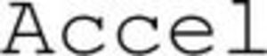

Trade Mark Journal No.2026/008 20 February 2026
WO0000001900845 (9,42)
Office of origin: France
Date of International Registration:26 November 2025
Date of designation in the UK:
26 November 2025

International priority date claimed: 27 May 2025
(France)
(5151137)
- Class 9
- Scientific apparatus and instruments; electronic sensors for detecting movement, vibrations or oscillations of the ground or of a structure anchored to the ground; seismic detection instrument; instruments for seismic data acquisition; seismic data processing apparatus; seismic detectors; seismometers; geophones; accelerometers; seismic sensor loading computer rack; apparatus for retrieving data recorded in geophysical measurement devices; seismic sensor deployment device and system; connection pins; data display screens; tracking indication devices associated with seismic detection instruments; apparatus and software for measuring, recording, communicating and preprocessing data for seismic, geotechnical and geophysical studies, and studies for monitoring soil, subsoil, and infrastructure.
- Class 42
- Scientific research; technical research projects and studies; maintenance of software; preparing and verifying the integrity of data associated with seismic and geophysical operations; monitoring of quality control for seismic procedures and geophysical data acquisition.
SERCEL
Representative: BACOU Clémence IPSILON, 12 avenue d'Italie, F-75013 PARIS, FRANCE